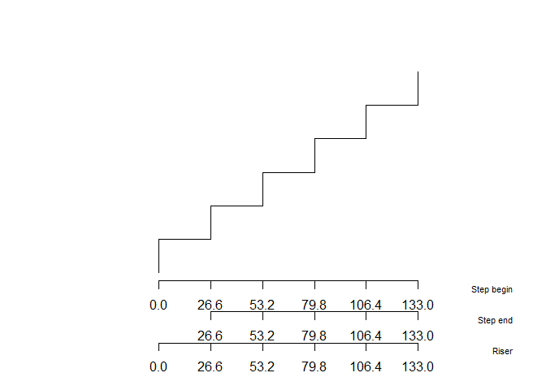
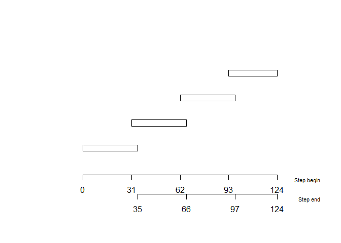
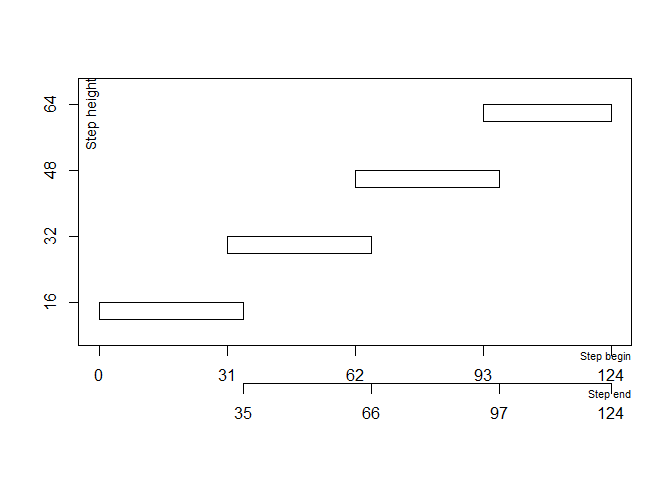
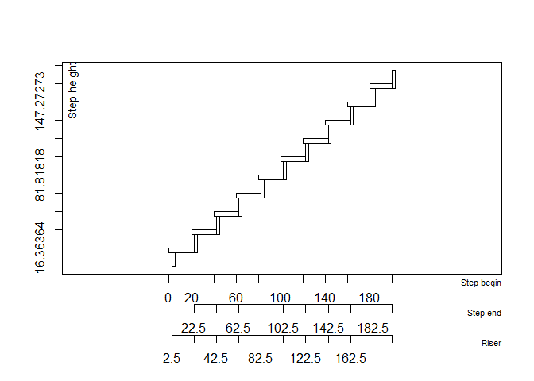
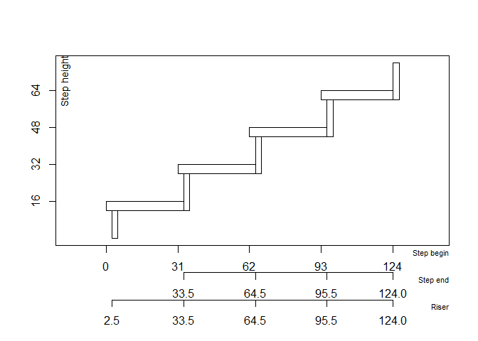
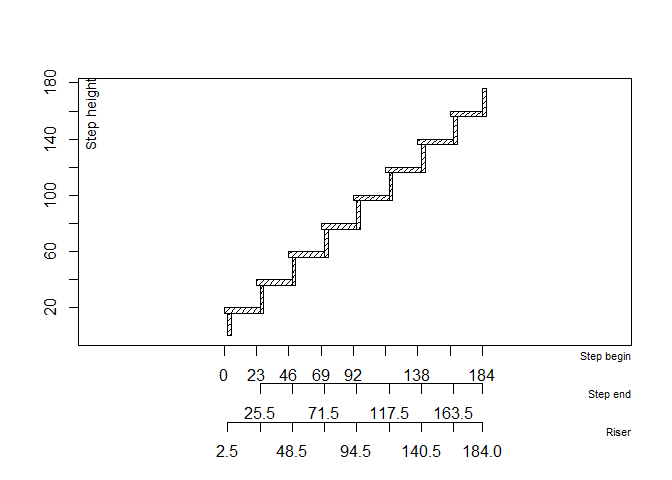
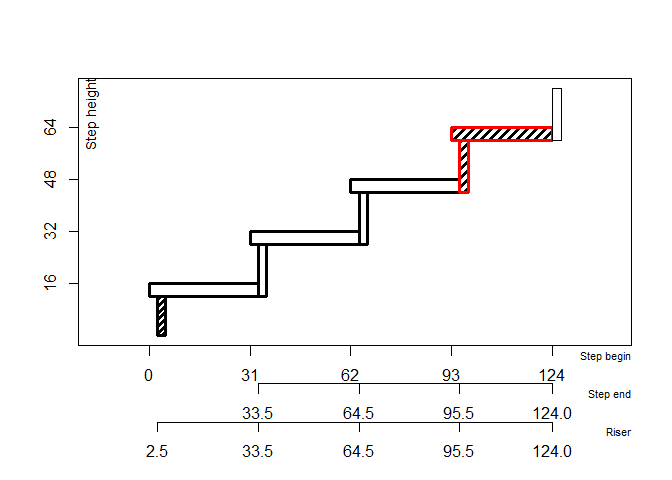
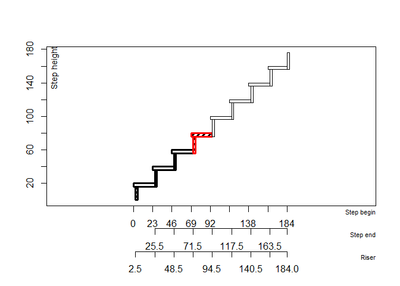

🪜 stairtools is an R package designed to calculate and visualise staircase designs, based on basic architectural constraints. Results are sorted according to a step height optimization, in order to choose easily the best stair dimensioning.
Installation
Install the latest development version from GitHub:
# install.packages("remotes")
remotes::install_github("clement-LVD/stairtools")Preamble and usage
㎝. All dimensions are expressed in centimetres.
Input. The user must indicate a total rise to elevate and a total length available. If length is not a constraint on your project, you can specify a very large value.
Output. The package calculates all possible – reasonable – staircase configurations and return various solutions, i.e. varying numbers of steps and whether or not there is a landing step.
𓊍 The possible solutions are scored according to Blondel’s rule (see below).
Blondel’s value. A stair geometry follows the Blondel - comfort - relationship.
Where is the rise (vertical riser height), is the going (horizontal tread depth), and is the target Blondel value.
𓊍 In French carpentry and masonry practices for domestic staircase construction, the Blondel ideal value should be 63 cm. It is recommended to prioritise the staircase solution with the smallest deviation from this Blondel target value. From this French point of view, solutions with a Blondel value between 60 cm and 64 cm are acceptable.
Best solution. Possible solutions are sorted by their deviation from the Blondel target value, default is 63 cm.
Edges cases. When several solutions have a similar Blondel value, solutions are sorted by their deviation from the minimum rise, i.e. 16 cm. This is to ensure that the staircase is comfortable for older people, those wearing high-heeled shoes, children, small dogs and old dogs, etc.
Examples
The examples cover the various stair calculations provided by solve_stairs(), followed by the graphical parameters provided by plot_stair().
Stair computations
Basic concrete stairs. solve_stairs() compute various basic stair solutions, given a total height and a maximum horizontal run available. The function returns a data.frame listing several solutions, the most relevant of which is the first entry. A list variable called geometry provides the coordinates for each solution, with one entry for each solution in the main data.frame, in the same order.
library(stairtools)
sol <- solve_stairs(total_height = 103, max_horizontal_run = 133)
print(sol)
#>
#> 1 valid solution(s)
#> n_risers step_rise rise_target_deviation going scenario
#> 2 6 17.16667 1.166667 28.66667 no_landing_uniform
#> horizontal_run blondel blondel_target_deviation has_landing
#> 2 133 60.93333 2.066667 FALSE
#> horizontal_run_exceeded landing_impossible is_valid rank
#> 2 FALSE FALSE TRUE 1
#> ('geometry' list-col is hidden - access via $geometry[[i]])
# plot the best solution
plot_stair(sol$geometry[[1]]) 
Some staircase designs have a landing step at the top. For these solutions, thhe has_landing variable is set to TRUE.
sol2 <- solve_stairs(total_height = 68, max_horizontal_run = 133)
landing_step_solutions <- sol2[sol2$has_landing == TRUE, ]
# plot the best solution within solutions providing a landing step
plot_stair(landing_step_solutions$geometry[[1]]) 
By default, solve_stairs() return basic concrete stairs, computed with tread_thickness = 0, riser_thickness = 0, nosing = 0 and riser - vertical limit - are ploted with riser = TRUE, the default - as shown above.
Tread thickness and nosing. The example below shows a 7 cm thick covering layer over a concrete staircase, extending outwards to leave a 4 cm stair nosing. The parameters are therefore tread_thickness = 7, nosing = 4, riser_thickness = 0.
sol3 <- solve_stairs(80, 150, tread_thickness = 7, nosing = 4, riser_thickness = 0)
plot_stair(sol3$geometry[[1]], riser = TRUE)
When a stair nosing is required, the final top step is shorter by default - in order to maintain a constant going and thus avoid a ‘top-of-the-flight’ effect.
Alternative nosing direction. Nosing can instead be added in the negative direction with positive_nosing_direction = FALSE.
sol_neg <- solve_stairs(80, 150, tread_thickness = 4, nosing = 2.5, positive_nosing_direction = FALSE)
plot_stair(sol_neg$geometry[[1]])
With this setting, all steps keep the same theoretical going, but the first step may protrude beyond the indicated available space. With the default positive direction, the last step is shortened instead, so that the staircase does not extend beyond the available run.
Wood-stairs. Wood stairs can be computed by specifying tread_thickness riser_thickness and or nosing parameters, expressed in centimeters.
wood_stairs <- solve_stairs(80, 150, tread_thickness = 4, riser_thickness = 2.6, nosing = 2.5)
plot_stair(wood_stairs$geometry[[1]])
By default, the risers are positioned behind the tread, they do not overlap the nosing.
Risers.
xxx todo : various risers computations xxx
Open-riser stairs. Open-riser stairs can be plotted with plot_stair(riser = FALSE). By default, plot_stair() displays the vertical risers.
sol4 <- solve_stairs(80, 150, tread_thickness = 4, nosing = 4)
plot_stair(sol4$geometry[[1]], riser = FALSE)
Legal and regulatory aspects
To qualify the solutions, the check_stair_rules parameters adds various logical columns relating to the legal or academic compliance of the proposed staircases.
wood_stairs <- solve_stairs(180, 200, tread_thickness = 4, riser_thickness = 2.6, nosing = 2.5, check_stair_rules = TRUE)
# several logical columns and numeric (n_rules_ok & rate_rules_ok) are added
print(wood_stairs)
#>
#> 5 valid solution(s)
#> n_risers step_rise rise_target_deviation going scenario
#> 9 9 20.00000 4.0000000 23.00000 no_landing_blondel
#> 12 9 20.00000 4.0000000 23.00000 landing_max
#> 10 9 20.00000 4.0000000 23.00000 no_landing_uniform
#> 6 10 18.00000 2.0000000 27.00000 no_landing_uniform
#> 2 11 16.36364 0.3636364 30.27273 no_landing_uniform
#> horizontal_run blondel blondel_target_deviation has_landing
#> 9 184 63.00000 0.000000 FALSE
#> 12 200 63.00000 0.000000 TRUE
#> 10 200 65.00000 2.000000 FALSE
#> 6 200 58.22222 4.777778 FALSE
#> 2 200 52.72727 10.272727 FALSE
#> horizontal_run_exceeded landing_impossible is_valid rank
#> 9 FALSE FALSE TRUE 1
#> 12 FALSE FALSE TRUE 2
#> 10 FALSE FALSE TRUE 3
#> 6 FALSE FALSE TRUE 4
#> 2 FALSE FALSE TRUE 5
#> US_ADA_public_stairs US_ADA_pool_stairs US_ADA_pool_transfer_steps
#> 9 FALSE FALSE FALSE
#> 12 FALSE FALSE FALSE
#> 10 FALSE FALSE FALSE
#> 6 FALSE FALSE FALSE
#> 2 TRUE TRUE FALSE
#> US_IBC_means_of_egress US_IBC_dwelling_units
#> 9 TRUE FALSE
#> 12 TRUE FALSE
#> 10 TRUE FALSE
#> 6 TRUE TRUE
#> 2 TRUE TRUE
#> US_IBC_guard_towers_observation_stations_and_control_rooms
#> 9 FALSE
#> 12 FALSE
#> 10 FALSE
#> 6 FALSE
#> 2 TRUE
#> US_IRC_means_of_egress US_IRC_sleeping_loft
#> 9 FALSE TRUE
#> 12 FALSE TRUE
#> 10 FALSE TRUE
#> 6 TRUE TRUE
#> 2 TRUE FALSE
#> FR_collective_housing_common_areas FR_private_dwelling_interior
#> 9 FALSE FALSE
#> 12 FALSE FALSE
#> 10 FALSE FALSE
#> 6 FALSE TRUE
#> 2 TRUE TRUE
#> FR_ERP_accessibility FR_workplace_accessibility FR_public_circulation_stairs
#> 9 FALSE FALSE FALSE
#> 12 FALSE FALSE FALSE
#> 10 FALSE FALSE FALSE
#> 6 FALSE FALSE FALSE
#> 2 FALSE FALSE FALSE
#> ISO_machinery_access UK_private UK_utility UK_general_access
#> 9 TRUE TRUE FALSE FALSE
#> 12 TRUE TRUE FALSE FALSE
#> 10 TRUE TRUE FALSE FALSE
#> 6 FALSE TRUE TRUE FALSE
#> 2 FALSE FALSE FALSE FALSE
#> academic_compromise etiological_studies feet_accommodation n_rules_ok
#> 9 FALSE FALSE FALSE 4
#> 12 FALSE FALSE FALSE 4
#> 10 FALSE FALSE FALSE 4
#> 6 TRUE TRUE FALSE 9
#> 2 TRUE TRUE TRUE 11
#> rate_rules_ok
#> 9 0.20
#> 12 0.20
#> 10 0.20
#> 6 0.45
#> 2 0.55
#> ('geometry' list-col is hidden - access via $geometry[[i]])
plot_stair(wood_stairs$geometry[order(-wood_stairs$rate_rules_ok)][[1]] )
The Blondel value used as a reference by
solve_stairs(63 cm) reflect the traditional French stair geometry criteria and does not allow compliance with most of the proposed standards when risers heights > 17 cm are adopted.
Not all standards are necessarily relevant to your situation since some standards apply specifically to a country or a particular type of staircase, e.g., according to the ISO standard, a stair that is a permanent mean of access to machinery require a Blondel value between 60 cm and 66 cm1.
Graphical parameters
plot_stair() uses base R’s graphics::polygon() to draw each stair surface. Graphical parameters can therefore be passed through polygon_params.
For example, the colour and border of all stair surfaces can be changed.
plot_stair(
wood_stairs$geometry[[1]],
polygon_params = list(
col = "grey90",
border = "black",
lwd = 2
)
)
Other graphical parameters supported by graphics::polygon() can also be used, including line types and hatching.
plot_stair(
wood_stairs$geometry[[1]],
polygon_params = list(
col = "black",
border = "black",
density = 25,
angle = 45
)
)
Styles can be applied selectively to specific steps or surfaces. The surface selector accepts “tread” or “riser”, while steps can be a single step number or a vector of step numbers.
For example, treads and risers can be displayed differently.
plot_stair(
wood_stairs$geometry[[1]],
styles = list(
list(
surface = "tread",
col = "black",
density = 25,
angle = 45
),
list(
surface = "riser",
col = "grey50"
)
)
)
Styles can also target individual step with steps = c().
plot_stair(
wood_stairs$geometry[[1]],
styles = list(
list(
steps = 1:4,
col = "white",
border = "black",
lwd = 3
), list(
steps = 1,
surface = "riser", col = "black", density = 20,
angle = 45
),
list(
steps = 4,
col = "black",
border = "red",
density = 15,
angle = 45
)
)
)
Styles are applied in order. When several styles apply to the same polygon, parameters defined by a later style replace parameters with the same name defined by earlier styles.
The polygon_params argument therefore provides a global default style if no steps is specified, while styles can be used to override individual steps or surfaces.
All graphical parameters accepted by graphics::polygon() can be passed in this way.